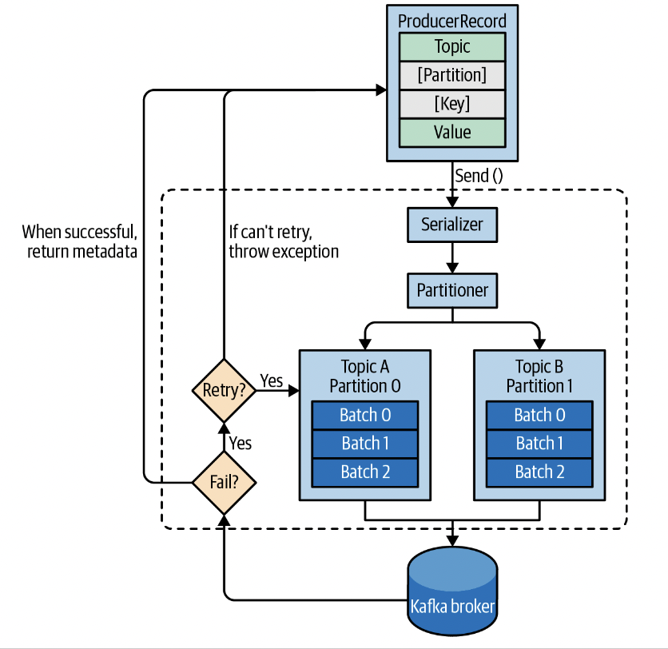
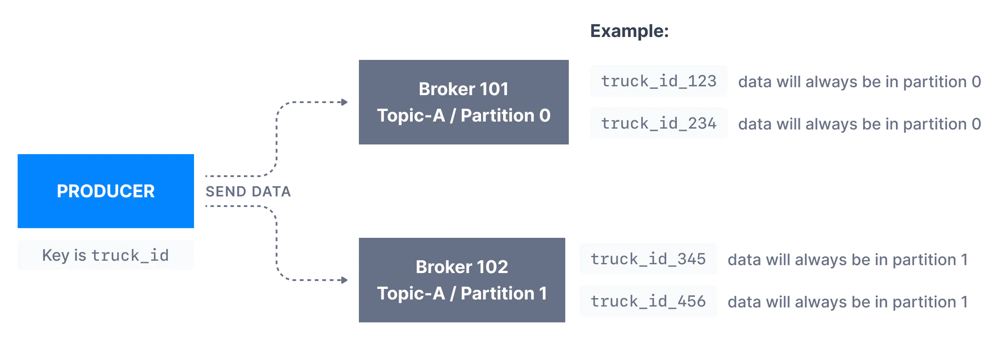
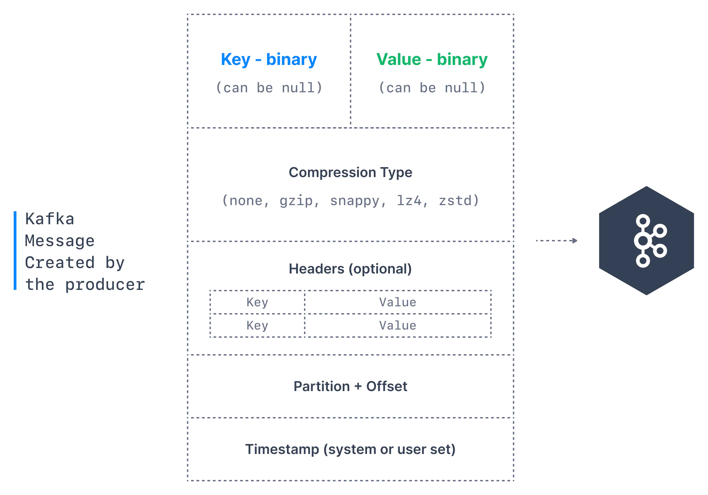
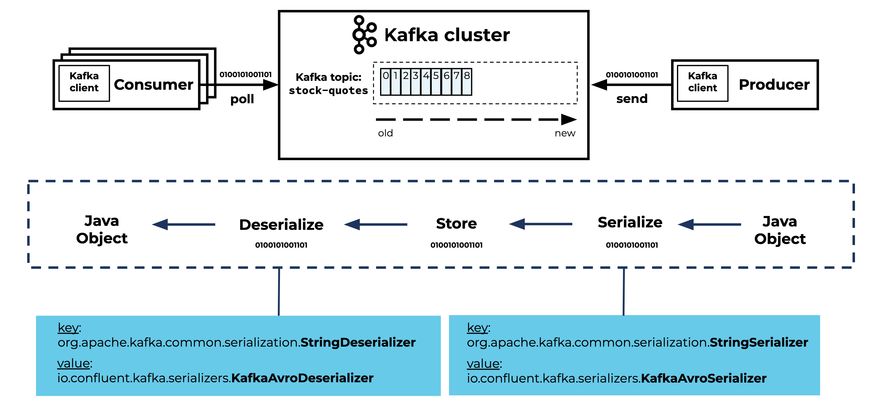
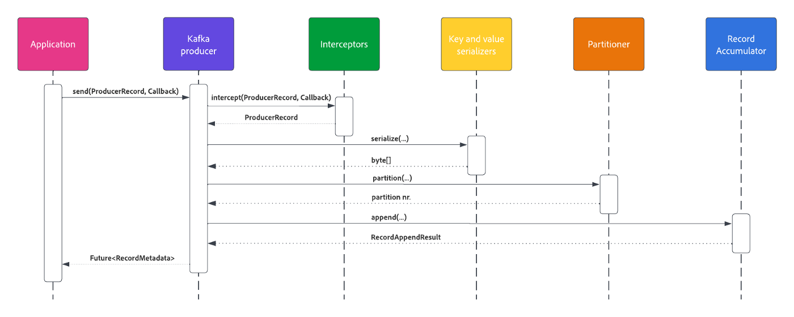
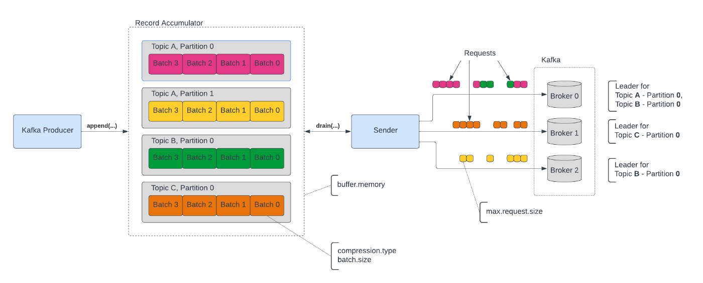
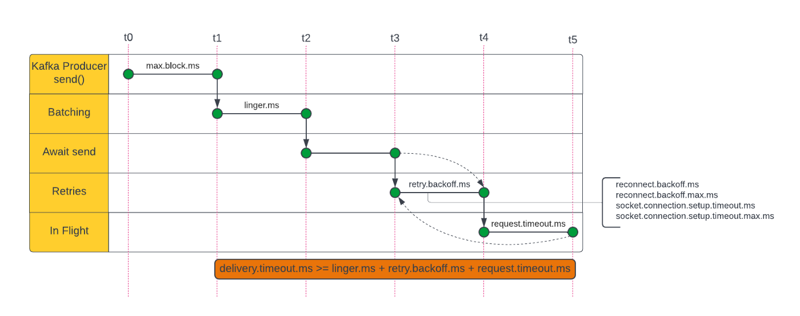

Kafka producer
Kafka producer is a component of the Kafka ecosystem which is used to publish messages onto a Kafka topic.

Message Keys
Each event message contains an optional key and a value.
In case the key (key=null) is not specified by the producer, messages are distributed evenly across partitions in a topic. This means messages are sent in a round-robin fashion (partition p0 then p1 then p2, etc... then back to p0 and so on...).
If a key is sent (key != null), then all messages that share the same key will always be sent and stored in the same Kafka partition. A key can be anything to identify a message - a string, numeric value, binary value, etc.

Kafka Message Anatomy
Kafka messages are created by the producer. A Kafka message consists of the following elements:

- Key: Mentioned above
- Value: represents the content of the message and can also be null. The value format is arbitrary and is then also serialized into binary format.
- Compression Type: Kafka messages may be compressed. The compression type can be specified as part of the message. Options are none, gzip, lz4, snappy, and zstd
- Headers: There can be a list of optional Kafka message headers in the form of key-value pairs. It is common to add headers to specify metadata about the message, especially for tracing.
- Partition + Offset: Once a message is sent into a Kafka topic, it receives a partition number and an offset id. The combination of topic+partition+offset uniquely identifies the message
- Timestamp: A timestamp is added either by the user or the system in the message.
Kafka Message Serializers
The data sent by the Kafka producers is serialized. This means that the data received by the Kafka consumers must be correctly deserialized in order to be useful within your application.Data being consumed must be deserialized in the same format it was serialized in.

Sending a message to Kafka

- The producer passes the message to a configured list of interceptors. For example, an interceptor might mutate the message and return an updated version.
- Serializers convert record key and value to byte arrays
- Default or configured partitioner calculates topic partition if none is specified.
- The record accumulator appends the message to producer batches using a configured compression algorithm.
At this point, the message is still in memory and not sent to the Kafka broker. Record Accumulator groups messages in memory by topic and partition.

Sender thread groups multiple batches with the same broker as a leader into requests and sends them. At this point, the message is sent to Kafka.
There are 3 primary method of sending messages:
- Fire and forget: We send a message to the server and don't really care if it arrives successfully or not.
- Synchronous send: Technically, Kafka producer is always asynchronous, we send a message and the
sendmethod return aFutureobject. However, we useget()to wait on theFutureand see if thesend()as successful or not. - Asynchronous send: We call the
send()method with a callback function, which gets triggered when it receives a response from the Kafka server.
Delivery time

Kafka producer configutation
bootstrap.servers
A list of host/port pairs to use for establishing the initial connection to the Kafka cluster. This list does not need to include all brokers, since the producer will get more information after the initial connection. But it is recommended to include at least 2, so in case one broker goes down, the producer will still be able to connect to the cluster.
key.serialized
Serializer class for key that implements the org.apache.kafka.common.serialization.Serializer interface.
value.serialized
Serializer class for value that implements the org.apache.kafka.common.serialization.Serializer interface.
client.id
An id string to pass to the server when making requests. The purpose of this is to be able to track the source of requests beyond just ip/port by allowing a logical application name to be included in server-side request logging. acks
The acks parameter controls how many partition replicas must receive the record before the producer can consider the write successful.
0: a producer will not wait for acknowledgment from brokers1: a producer will wait only for the partition leader to write a message, without waiting for all followersall, a producer will wait for all in-sync replicas to acknowledge the message. This comes at latency costs and represents the strongest available guarantee.
Default: all
max.block.ms
The configuration controls how long the KafkaProducer's send(), partitionsFor(), initTransactions(), sendOffsetsToTransaction(), commitTransaction() and abortTransaction() methods will block
Default: 1 minutes
delivery.timeout.ms
This configuration will limit the amount of time spent from the point a record is ready for sending (send() returned successfully and the record is placed in a batch)
Default: 2 minutes
request.timeout.ms
The configuration controls the maximum amount of time the client will wait for the response of a request.
Default: 30s
retries
Setting a value greater than zero will cause the client to resend any record whose send fails with a potentially transient error
Default: 2147483647
retry.backoff.ms
The amount of time to wait before attempting to retry a failed request to a given topic partition.
linger.ms
This configutation controls the amount of time to wait for additional messages before sending the current batch. KafkaProducer sends a batch of messages either when the current batch is full (using batch.size configuration) or when the linger.ms limit is reached.
Default: 0
max.in.flight.requests.per.connection
This controls how many message batches that the producer is allowed to sent before waiting for an ack from the broker. In other words this configuration is the maximum number of unacknowledged requests the client will send on a single connection before blocking.
If retries are enabled, and max.in.flight.requests.per.connection is set greater than 1, and enable.idempotence is enabled there lies a risk of message re-ordering.
Apache Kafka preserves the order of messages within a partition. Setting retries to non-zero and max.in.flight.requests.per.connection to more than 1 means that it is possible that the broker will fail to write the first batch of messages, succeed in writing the second (which as already in-flight) and then retry the first batch and succeed, thereby reversing the order.
1 2 3 | |
Default: 5
enable.idempotence
When set to 'true', the producer will ensure that exactly one copy of each message is written in the stream.
Note that enabling idempotence requires max.in.flight.requests.per.connection to be less than or equal to 5 (with message ordering preserved for any allowable value), retries to be greater than 0, and acks must be 'all'.
There is some case that the message is written to the broker more than one. For example, imagine that a broker received a record from the producer, wrote it to the disk and the record was successfully replicated to other broker, but then the first broker crashed before sending a response to the producer. The producer will wait until it reaches request timeout and then retry. The retry will go to the new leader that already has a copy of this record since the previous write was replicated successfully => you have a duplicated record.
NOTE: Enable enable.idempotence ensures messages ordering within topic partition even max.in.flight.requests.per.connection configuration is larger than 1
Default: true
Please refer this site for more producer config